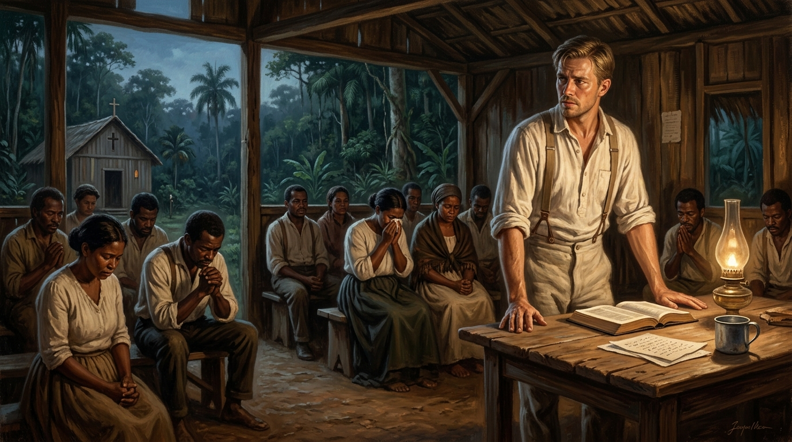

A Chamada sem Retorno, o Despojamento do Poder, os Filhos Enterrados e o Leito de Morte do Pioneiro

Em 1909, Gunnar Vingren era um jovem diplomado pelo Seminário Teológico Batista de Chicago, com um futuro promissor no pastoreio na América do Norte ou na Suécia. No entanto, durante uma conferência de oração em South Bend (Indiana), uma revelação profética indicou a cidade de "Pará" — um local de cuja existência nem ele nem seu companheiro Daniel Berg jamais tinham ouvido falar.
Em novembro de 1910, sem sustento financeiro de juntas missionárias formais e movidos exclusivamente pela obediência bíblica, desembarcaram no porto de Belém do Pará. Vingren abriu mão de seu conforto, de sua pátria e de seus direitos para tornar-se um instrumento no derramamento do Espírito Santo no Brasil.
Um dos traços mais nobres do caráter de Gunnar Vingren foi a total ausência de apetite pelo poder institucional. Enquanto muitos missionários europeus do século XIX e XX mantiveram o controle administrativo e financeiro das igrejas fundadas no sul global, Vingren adotou uma postura estritamente apostólica e humilde.
A Descentralização e a Formação de Líderes Nacionais:
Vingren entendeu que a igreja pertencia ao povo brasileiro e ao Espírito Santo. Formou, capacitou e consagrou os primeiros pastores e evangelistas nacionais (como Cícero Canuto de Lima, Crispim de Melo e centenas de outros), transferindo gradativamente a liderança das assembleias locais aos obreiros brasileiros sem qualquer ressentimento ou reserva de autoridade.
O preço da evangelização do Brasil foi pago com sangue e lágrimas familiares. Vivendo em condições de extrema pobreza e enfrentando o clima hostil e as febres tropicais do Norte e Nordeste, Gunnar e sua esposa, Frida Vingren, enfrentaram provações dolorosas.
Três de seus filhos adoeceram gravemente devido à falta de recursos e assistência médica adequada na época, vindo a falecer ainda na infância. Gunnar Vingren e Frida sepultaram seus próprios filhos na terra brasileira, selando o seu amor pela nação não apenas com palavras, mas com o sacrifício de suas dores mais profundas.
A expansão do avivamento pentecostal gerou intensa oposição. Vingren foi alvo de calúnias em jornais, acusações de fanatismo por setores clérigos tradicionais e até perseguições físicas e apedrejamentos em locais onde pregava no interior do país.
Mesmo diante de injustiças e difamações severas, sua resposta mantinha-se pautada pela mansidão bíblica, recusando-se a alimentar contendas e focando unicamente na intercessão e na pregação da Palavra.
Em 1932, após anos de desgaste físico extremo, febres recorrentes e esgotamento decorrente do pastoreio da igreja no Rio de Janeiro, a saúde de Vingren colapsou definitivamente. Ele retornou à Suécia gravemente enfermo para seus últimos meses de vida.
“Eu de bom grado gastarei e me deixarei gastar pelas vossas almas...” — 2 Coríntios 12:15
Nos seus momentos finais em Estocolmo (1933), desprovido de qualquer bem material ou economia pessoal, Vingren enfrentou dores intensas no peito. Relatos de Frida Vingren registram que, mesmo no leito de morte, Gunnar tinha visões espirituais da glória de Deus e orava em línguas e em português intercedendo pelo Brasil, partindo para o Senhor sem deixar herança terrena, mas um legado espiritual incalculável.
A vida de Gunnar Vingren encarna o modelo apostólico registrado em **2 Coríntios 12:15** e **Atos 20:24**: “Em nada tenho a minha vida por preciosa, contanto que cumpra com alegria a minha carreira e o ministério que recebi do Senhor Jesus.”
Sua postura de renunciar ao controle das igrejas e entregá-las aos nacionais reflete a eclesiologia de Paulo, que constituía presbíteros locais em cada cidade e os encomendava ao Senhor (Atos 14:23).
A espiritualidade de Vingren conecta-se com a tradição do Pietismo e do misticismo da auto-anulação (Kenosis). Ele não viveu para projetar o seu nome; viveu para que o movimento pertencesse totalmente a Cristo e ao povo brasileiro.
| Fase da Vida | Desafio / Provação Enfrentada | Resposta Teológica / Fruto Histórico |
|---|---|---|
| A Chamada (1909-1910) | Abandono da carreira na Suécia/EUA para ir ao Pará sem sustento. | Obediência à visão profética e fundação do movimento pentecostal em Belém. |
| O Ministério no Brasil | Enfermidades tropicais, pobreza e a perda trágica de filhos pequenos. | Perseverança na pregação e consagração da família em solo brasileiro. |
| A Governança Eclesial | Tentações de centralização e controle colonial do movimento. | Ceder a liderança aos pastores nacionais, formando uma igreja genuinamente brasileira. |
| O Leito de Morte (1932-1933) | Esgotamento físico, dores no peito, pobreza e separação do Brasil. | Oração intercessora pelo Brasil até o último suspiro e entrada na glória sem bens materiais. |
Gunnar Vingren morreu sem deixar propriedades, títulos ou fortunas terrenas. Sua herança foi imaterial e eterna: uma vida inteira consumida no altar de Deus em favor do Brasil.
Seu exemplo de despojamento, amor pelo povo brasileiro e fidelidade no sofrimento permanece como o alicerce espiritual mais precioso da história do avivamento pentecostal no país.